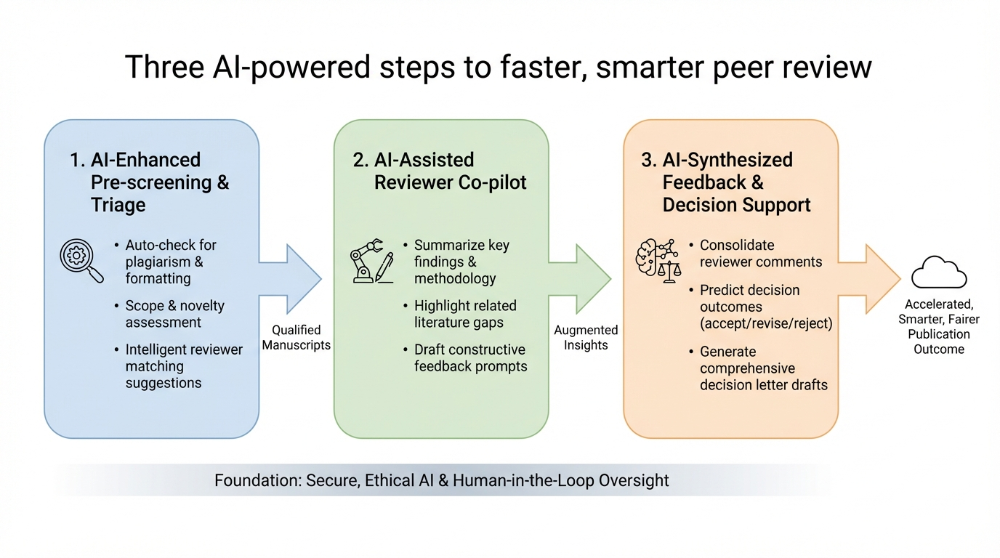

Figure 1
피어 리뷰에 소요되는 시간을 대폭 줄이면서도 리뷰 품질을 유지할 수 있는 AI 보조 워크플로우를 제안하는 실용적 칼럼이다. "Scan-Dictate-Refine"의 3단계 방법론을 통해, 기존 반나절 소요되던 리뷰를 30~40분으로 단축한 개인 경험을 공유하며, 특히 오프라인 LLM(GPT4ALL) 활용을 통한 기밀성 보장을 강조한다.
학술 피어 리뷰 시스템은 심각한 시간 부담에 직면해 있다. 저자의 비공식 소셜미디어 설문(약 900명 응답)에 따르면, 40% 이상이 단일 리뷰에 2~4시간을 소비하고, 25% 이상이 4시간 초과, 14%는 8시간 이상을 투자한다. 이로 인해 경험 많은 연구자들이 리뷰 초대를 거절하는 사례가 증가하여 과학 커뮤니티 전체의 리뷰 생태계가 위협받고 있다. 연구자들은 교육, 연구비 신청, 연구 등 다중 업무를 수행하므로, 효율적이면서도 품질을 유지하는 리뷰 방법이 절실하다.
본 칼럼은 학술 피어 리뷰의 시간 부담이라는 현실적 문제에 대해 즉시 실행 가능한 해결책을 제시하는 실용적 기여가 있다. Scan-Dictate-Refine 프레임워크는 직관적이고 접근성이 높으며, 오프라인 LLM 활용을 통한 기밀성 보장은 많은 리뷰어들이 간과하는 중요한 윤리적 고려사항을 환기시킨다. Nature에 게재된 만큼 가시성이 높고, 특히 초기 경력 연구자들에게 리뷰 프로세스의 효율화 팁으로서 가치가 있다. 그러나 학술 연구 논문이 아닌 개인 경험 기반 칼럼이므로, 제안된 방법의 일반화 가능성이나 리뷰 품질에 미치는 영향에 대한 엄밀한 검증은 향후 과제로 남는다. LLM을 리뷰어의 "대체"가 아닌 "보조"로 위치시킨 균형 잡힌 시각은 현 시점에서 적절한 관점이다.
| 항목 | 점수 (1-5) |
|---|---|
| Novelty | 2 |
| Technical Soundness | 2 |
| Significance | 2 |
| Overall | 2.0 |
총평: AI 보조 리뷰 워크플로우 3단계를 소개하는 Nature Career 칼럼으로, 실용적 조언은 있으나 체계적 검증이나 학술적 기여 없이 개인적 경험담 수준에 그친다.